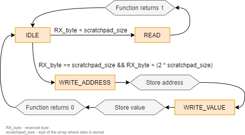
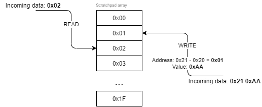

Memory Scratch Pad Protocol - C Protocol Implementation
In the previous chapter we have created implementation of circular buffer. Let's put this aside now and think, how we will parse our incoming messages. We have decided that every byte will mean something, and we also stated that bytes will not be translated into any ASCII character. What will happen after our program runs?
Our protocol will wait for one or two bytes. The amount of bytes that we need to receive is going to depend on what kind of action is going to be performed on the registers. Always, the first received byte is going to be the index of the register, second byte is going to be an eventual data that we want to store in the register. But how we can easily recognize when we want to perform write operation? There are many solutions to solve this problem. I am going to describe my idea.
Imagine 32 registers, every register is 8 bits long (uint8_t) we can index them from 0 to 31, so basically our memory scratch pad is a standard 'array' of 'chars'. If we know the size of the scratch pad, we can easily add the scratch pad size to the first byte. This is way of identifying write/read operation if we are performing read operation, we are going to send number from 0 to 31, in case of write operation we are going to offset the register index + scratchpad size to the first byte. Our algorithm will check however the first received byte is greater than our scratch pad size or not.
We have made our formal decisions, we should create a graph that will perhaps clarify a bit what we would like to achieve.
 
We would like to create a hideable instance of the protocol implementation to create easy to use library. Functions related with parsing should be called in main loop or on interrupt from counter rather than in ISR which is generated after received character. The idea demonstration can be showed with rather simple pseudo-code:
INIT:
initialize_rx_circular_buffer
initialize_communication
initialize_rx_isr
MAIN_LOOP:
...
IF !rx_circular_buffer_empty:
read_circular_buffer
parse_data
IF read_command:
send_data
...
RX_ISR:
push_rx_byte_to_rx_circular_buffer
... or we can initialize another ISR from counter, and parse incoming data without blocking the main program:
INIT:
initialize_rx_circular_buffer
initialize_tx_circular_buffer
initialize_communication
initialize_rx_isr
initialize_counter_isr
MAIN_LOOP:
...
RX_ISR:
push_rx_byte_to_rx_circular_buffer
COUNTER_ISR:
IF !tx_circular_buffer_empty:
send_data
return
IF !rx_circular_buffer_empty:
read_circular_buffer
parse_data
IF read_command:
push_bytes_to_tx_circular_buffer
Notice, that in the counter_isr the first thing we have to make is check whether the previous question (read operation) was answered before parsing another query.
Before writing the logic, we should decorate our struct and enum:
#include "GPL_scratch_pad_protocle.h"
enum scratchPad_e {IDLE, READ, WRITE_ADDRESS, WRITE_VALUE};
struct __GPL_ScratchPad_t{
enum scratchPad_e state;
size_t scratchPad_size;
char *scratchPad;
};
We are making the same trick with encapsulation, just insert typedef void* GPL_ScratchPad_t; to the .h file.
Looking at the algorythm and pseudocode we can create our scratchpad initializer:
GPL_ScratchPad_t *GPL_ScratchPad_create( char * const scratchPad, size_t scratchPad_size ) {
if ( scratchPad_size < 1 || scratchPad == NULL )
return NULL;
struct __GPL_ScratchPad_t *handler = ( struct __GPL_ScratchPad_t * ) malloc( sizeof( *handler ) );
handler->state = IDLE;
handler->scratchPad = scratchPad;
handler->scratchPad_size = scratchPad_size;
return ( GPL_ScratchPad_t )handler;
}
Below simple functions that I recon are self describing.
void GPL_ScratchPad_reset( GPL_ScratchPad_t *handler ) {
struct __GPL_ScratchPad_t *__handler = ( struct __GPL_ScratchPad_t * ) handler;
__handler->state = IDLE;
}
void GPL_ScratchPad_destroy( GPL_ScratchPad_t *handler ) {
struct __GPL_ScratchPad_t *__handler = ( struct __GPL_ScratchPad_t * ) handler;
free( __handler );
}
char GPL_ScratchPad_read( GPL_ScratchPad_t *handler, char address ) {
struct __GPL_ScratchPad_t *__handler = ( struct __GPL_ScratchPad_t * ) handler;
__handler->state = IDLE;
return __handler->scratchPad[(size_t) address];
}
Why we are creating read function, if we can directly access the data? Because we want to be sure that the state machine is resetted after read operation. This small thing will protect the programmer from accessing indexes that should be a value not an address.
Now, we can proceed to write the core function that will take care of word processing, we need to remember that we are going to parse the stored data byte by byte. Therefor the state of the machine needs to be tracked somehow, here we are going to use already peppered enum.
int GPL_ScratchPad_processByte( GPL_ScratchPad_t *handler, char byte ) {
struct __GPL_ScratchPad_t *__handler = ( struct __GPL_ScratchPad_t * ) handler;
if( __handler->state == IDLE && byte < __handler->scratchPad_size )
__handler->state = READ;
if( __handler->state == IDLE && byte >= __handler->scratchPad_size
&& byte < ( __handler->scratchPad_size * 2 ) )
__handler->state = WRITE_ADDRESS;
if (__handler->state == WRITE_ADDRESS || __handler->state == WRITE_VALUE)
_GPL_ScratchPad_write( handler, byte );
return __handler->state == READ ? 1 : 0;
}
This only initialize 1/3 of our state machine, the enigmatic function _GPL_ScratchPad_write will take care of the scenario, where we have to store somehow the previous byte to know to which location the user want to write incoming data.
static void _GPL_ScratchPad_write( GPL_ScratchPad_t *handler, char byte ) {
struct __GPL_ScratchPad_t *__handler = ( struct __GPL_ScratchPad_t * ) handler;
static char address;
if( __handler->state == WRITE_ADDRESS ) {
address = byte - __handler->scratchPad_size;
__handler->state = WRITE_VALUE;
return;
}
if( __handler->state == WRITE_VALUE ) {
__handler->scratchPad[(size_t) address] = byte;
__handler->state = IDLE;
}
}
We are using here static variable, that will keep the content on heap - this will let us remember the previous byte (address), after we exit the function to receive the value that need to be stored in scratch pad register. Now it is time to connect our circular buffer and the scratchpad protocol together. I don't want to get into details about how to initialize isr or how to initialize serial communication for each microcontroller. These are beyond the scope of this article. But the pseudo code should answer the question of how to implement this in your code. I would like to divide our task into some small steps, it is great technique if you are embedding the code from the internet but you don't know where you should call the function. - Do we want to block our main loop? - Perhaps no. - If no, how fast we would like to parse the incoming data? - For my baudrate I think that 100Hz (every 10ms) is enough.
- Define how our response would look like. I will choose standard size frame with hex formatting (it will help later) - my response frame will look like this: '"0x%x:0:%x"' (first flag is for hexadecimal format of address byte, next flag is for hexadecimal value from requested address).
- Include header file for 'scratchpad' and 'circular buffer'.
- Initialize (globally) 'scratchpad' and 'circular buffer' handlers.
- Prepare scratchpad array and define its size.
- Call '_create' on each initialized handlers.
- Reset circular buffers.
- Initialize serial, counter ISR.
- IN RX ISR: push received data to the dedicated circular buffer.
- IN COUNTER ISR: Check if we need to answer for read operation by checking if tx circular buffer is empty.
- IN COUNTER ISR: If tx buffer not empty, send byte, and exit ISR without parsing received data. (Till we won't empty out the tx buffer).
- IN COUNTER ISR: Do we have any data to parse, if yes, read from rx circular buffer, and process the byte, if we will read, format the response from and load it to the tx buffer.
Now we are ready to translate it into the code:
/* STEP 2 */
#include "GPL_circular_buffer.h"
#include "GPL_scratch_pad_protocle.h"
/* STEP 3 */
GPL_ScratchPad_t scratchPad = { 0 };
GPL_CircularBuffer_t RX_circularBuffer = { 0 };
GPL_CircularBuffer_t TX_circularBuffer = { 0 };
int main(void) {
/* STEP 4 */
char scratchPad_memory[32] = { 0 };
/* STEP 5 */
scratchPad = GPL_ScratchPad_create( scratchPad_memory, sizeof( scratchPad_memory ) );
uint8_t RX_circularBuffer_size = 32;
RX_circularBuffer = GPL_CircularBuffer_create( RX_circularBuffer_size );
GPL_CircularBuffer_reset( RX_circularBuffer );
uint8_t TX_circularBuffer_size = 32;
TX_circularBuffer = GPL_CircularBuffer_create( TX_circularBuffer_size );
GPL_CircularBuffer_reset( TX_circularBuffer );
/* STEP 7 */
UART_INIT;
COUNTER0_INIT;
while (1)
{
SOME_CODE;
}
}
ISR(UART_RX) {
/* STEP 8 */
char RX_byte = UART_RX_BUFFER;
GPL_CircularBuffer_write( RX_circularBuffer, RX_byte );
}
ISR(COUNTER0) {
/* STEP 9 */
if( !GPL_CircularBuffer_empty( TX_circularBuffer ) ) {
/* STEP 10 */
char TX_byte = GPL_CircularBuffer_read( TX_circularBuffer );
USART_Transmit(TX_byte);
return;
}
/* STEP 11 */
if( !GPL_CircularBuffer_empty( RX_circularBuffer ) ) {
char byte = GPL_CircularBuffer_read( RX_circularBuffer );
if( GPL_ScratchPad_processByte( scratchPad, byte ) ){
char value = GPL_ScratchPad_read( scratchPad, byte );
char buffer[32] = "\0";
/* STEP 1 */
snprintf(buffer, sizeof(buffer), "0x%x:0x%x", byte, value);
char *buffer_ptr = buffer;
while(*buffer_ptr)
GPL_CircularBuffer_write( TX_circularBuffer,*buffer_ptr++ );
}
}
}
You can see there isn't much code that need to be inserted. There is still room for improvements, for example 'snprintf' in ISR is not a good idea, we can evaluate the date in different way, but right now it should work as intended without any extra problems. Hey, as someone has said "On my PC it works!".